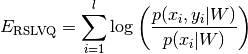
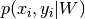
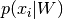
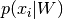

Robust Soft Learning Vector Quantization¶
A RSLVQ model can be constructed by initializing RslvqModel with the
desired hyper-parameters, e.g. the number of prototypes, and the initial
positions of the prototypes and then calling the RslvqModel.fit function with the
input data. The resulting model will contain the learned prototype
positions and prototype labels which can be retrieved as properties w_
and c_w_. Classifications of new data can be made via the predict
function, which computes the Euclidean distances of the input data to
all prototypes and returns the label of the respective closest prototypes.
Placing the prototypes is done by optimizing the following cost function, called the Robust Soft Learning Vector Quantization (RSLVQ) cost function [1]:

where  is the probability density that  is generated by a
mixture component of the correct class
is generated by a
mixture component of the correct class  and  is the total
probability density of .
and  is the total
probability density of .
The optimization is performed via a limited-memory version of the
Broyden-Fletcher-Goldfarb-Shanno algorithm. Regarding runtime, the cost
function can be computed in linear time with respect to the data points:
For each data point, we need to compute the distances to all prototypes,
compute the fraction  and then sum up all
these fractions, the same goes for the derivative. Thus, GLVQ scales
linearly with the number of data points.
and then sum up all
these fractions, the same goes for the derivative. Thus, GLVQ scales
linearly with the number of data points.
Matrix Robust Soft Learning Vector Quantization (MRSLQV)¶
Matrix Robust Soft Learning Vector Quantization (MRSLQV) generalizes over
RSLVQ by learning a full linear
transformation matrix  to support classification.
The matrix product
to support classification.
The matrix product  is called the positive
semi-definite relevance matrix
is called the positive
semi-definite relevance matrix  . Interpreted this way, MRSLQV is
a metric learning algorithm. It is also possible to initialize the
. Interpreted this way, MRSLQV is
a metric learning algorithm. It is also possible to initialize the
MrslvqModel by setting the dim parameter to an integer less than the data
dimensionality, in which case will have only dim rows, performing
an implicit dimensionality reduction. This variant is called Limited
Rank Matrix LVQ or LiRaM-LVQ [4]. After initializing the MrslvqModel and
calling the fit function on your data set, the learned matrix can
be retrieved via the attribute omega_.
The following figure shows how MRSLVQ classifies some example data after
training. The blue dots show represent the prototype. The yellow and
purple dots are the data points. The bigger transparent circle represent
the target value and the smaller circle the predicted target value. The
right side plot shows the data and prototypes multiplied with the
learned matrix. As can be seen, MRSLVQ effectively projects the
data onto a one-dimensinal line such that both classes are well
distinguished.
References:
| [4] | “Limited Rank Matrix Learning - Discriminative Dimension Reduction and Visualization” K. Bunte, P. Schneider, B. Hammer, F.-M. Schleif, T. Villmann and M. Biehl - Neural Networks, vol. 26, nb. 4, pp. 159-173, 2012. |
Local Matrix Robust Soft Learning Vector Quantization (LMRSLVQ)¶
LmrslvqModel extends RSLVQ by giving each prototype/class relevances for each feature. This way LMRSLVQ is able to project the data for better
classification.
Especially in multi-class data sets, the ideal projection may be
different for each class, or even each prototype. Localized Matrix Robust Soft
Learning Vector Quantization (LGMLVQ) accounts for this locality
dependence by learning an individual  for each prototype k [1].
As with MRSLVQ, the rank of can be bounded by using the dim
parameter. After initializing the
for each prototype k [1].
As with MRSLVQ, the rank of can be bounded by using the dim
parameter. After initializing the LmrslvqModel and calling the fit
function on your data set, the learned matrices can be
retrieved via the attribute omegas_.
The following figure shows how LMRSLVQ classifies some example data after
training. The blue dots show represent the prototype. The yellow and
purple dots are the data points. The bigger transparent circle represent
the target value and the smaller circle the predicted target value. The
plot in the middle and on the right show the data and prototypes after
multiplication with the  and
and  matrix respectively. As
can be seen, both prototypes project the data onto one dimension, but
they choose orthogonal projection dimensions, such that the data of the
respective own class is close while the other class gets dispersed,
thereby enhancing classification accuracy. A
matrix respectively. As
can be seen, both prototypes project the data onto one dimension, but
they choose orthogonal projection dimensions, such that the data of the
respective own class is close while the other class gets dispersed,
thereby enhancing classification accuracy. A MrslvqModel can not solve
this classification problem, because no global can enhance the
classification significantly.
References:
| [1] | (1, 2) “Distance Learning in Discriminative Vector Quantization” Petra Schneider and Michael Biehl and Barbara Hammer - Neural Computation, pp. 2942-2969, 2009. |